UMC Bluetooth Gateway provides an user friendly web interface for bluetooth device operation. It also provides the additional functions for network setting, connection status checking and log checking.There are five pages in this system, the detail information are listed page by page as follows:
1. 設定藍芽配對
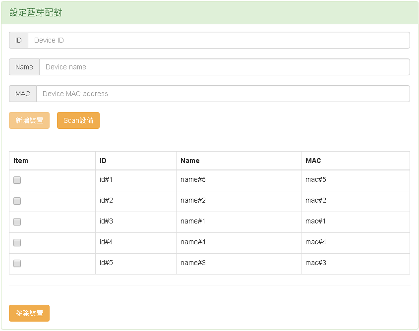
1. The table list includes information of each bluetooth device. When user clicks the button 移除裝置 the checked devices from the table will be removed.
2. The button 新增裝置 is disabled until user fullfills these three input fields ID, Name, MAC. The input device will be added to the device list when user clicks 新增裝置 button.
3. The button Scan設備 is for bluetooth device scanning.
2. 選擇對上protocol
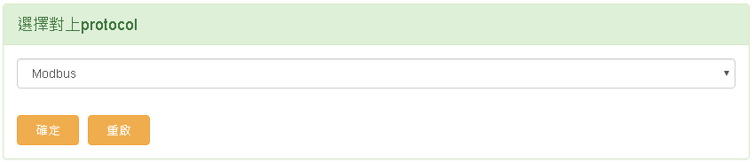
1. There are three protocols Modbus, Restful, Mqtt in the selection list. User clicks the 確定 button to set the protocol.
2. The button 重啟 is for rebooting mcu device to apply the new settings.
3. Logs
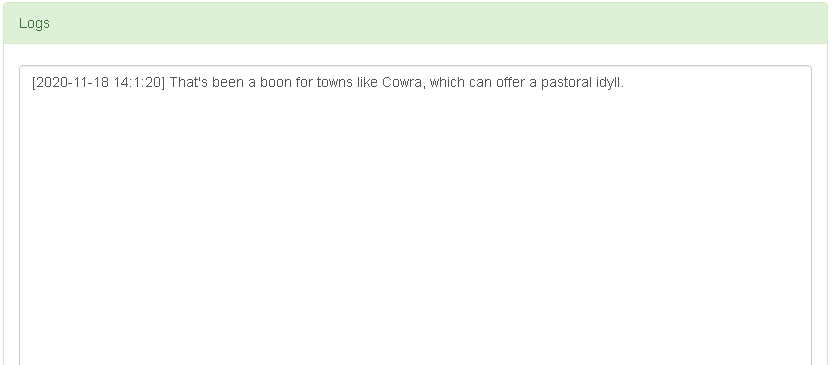
1. The Logs block displays all the information sent from server side, it notifies user the ble operation is failed or succeed or any other status.
1. 更新燒錄MCU
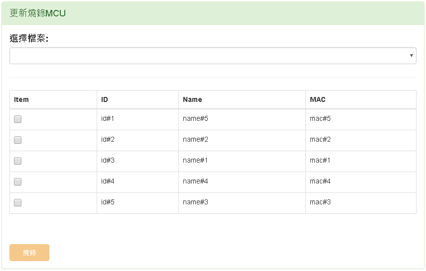
1. The button 燒錄 is disabled until user selects a file.
2. User has to click the selection list 選擇檔案 and choose a file before burning mcu.
3. After choosing a file, user has to check devices from the table list as the target.
4. Finally user clicks 燒錄 button to burn the selected file into the selected devices.
2. Logs
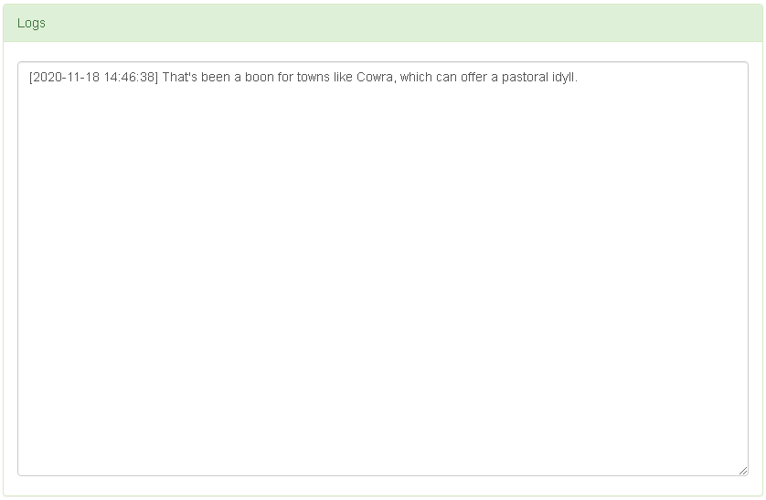
1. The Logs block displays all the information sent from server side, it notifies user the mcu operation is failed or succeed or any other status.
1. 設定區網
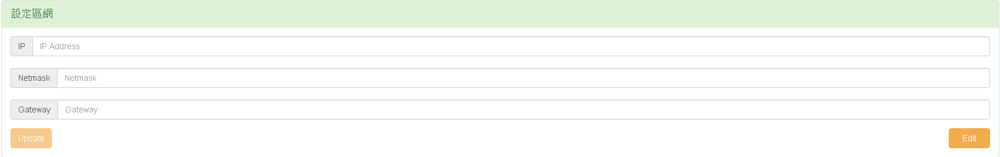
1. The button Update is disabled until user fullfills the input fields IP, Netmask.
2. User clicks Update button to update the network setting.
3. After user updates network settings, all input fields are locked, user is able to click Edit button to unlock these input fields to revise the settings.
2. Logs
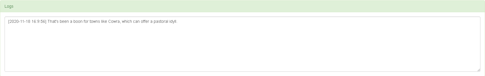
1. The Logs block displays all the information sent from server side, it notifies user the network setting operation is failed or succeed or any other status.
1. 設定區網
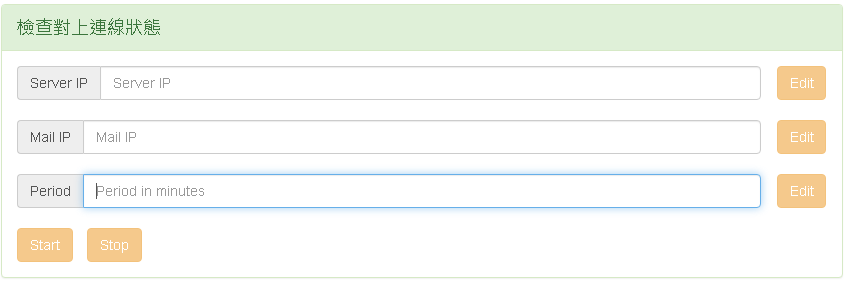
1. This page is used to check the connection status by ping. User inputs Server IP and Period fields the disabled Start button will be enabled.
2. The unit of field Period is minute, it is the time interval to ping server IP.
3. The Start button and the Stop button is exclusive
4. All input fields and Edit buttons are disabled after user clicks Start button.
5. Edit buttons are enabled after user clicks Stop button. User can clicks Edit button to edit the corresponding input field.
2. Alarm清單
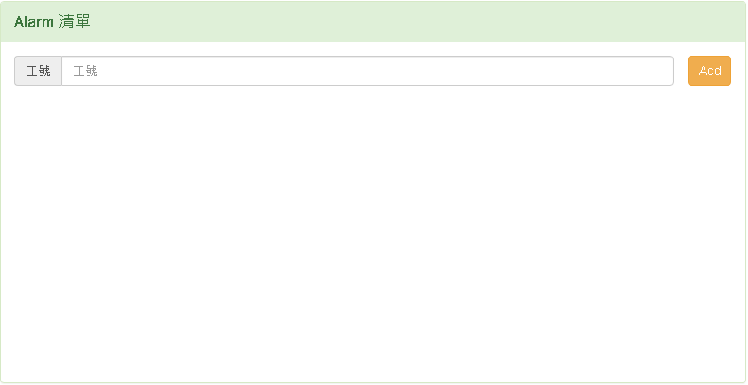
Not implement yet.
3. Logs
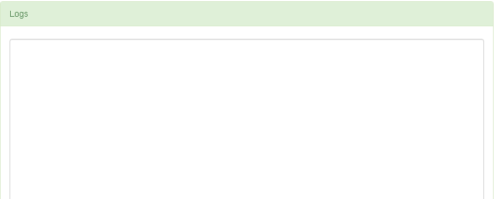
1. The information to ping the Server IP is displayed here.
1. 查詢前端Log
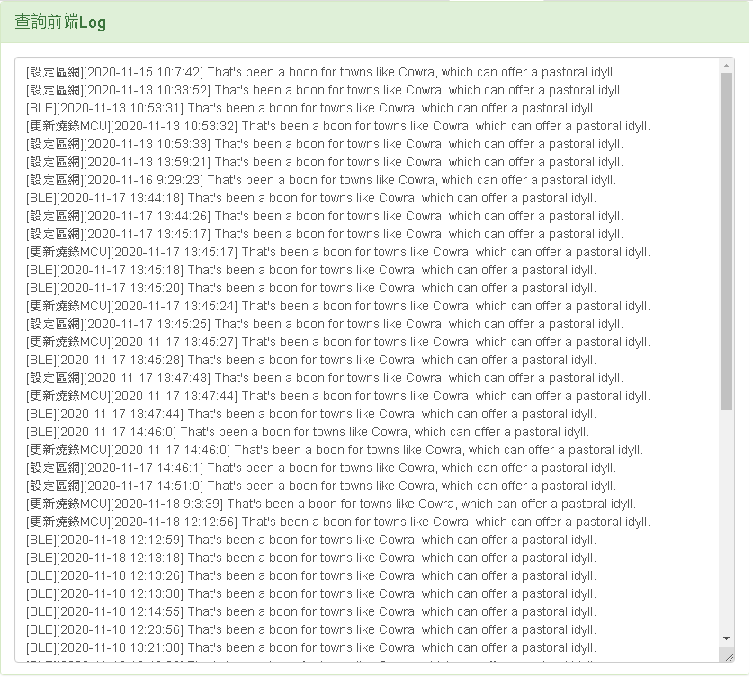
1. Logs produced from page BLE, 更新燒錄MCU, 設定區網 are collected and displayed in this block.
2. 查詢後端Log
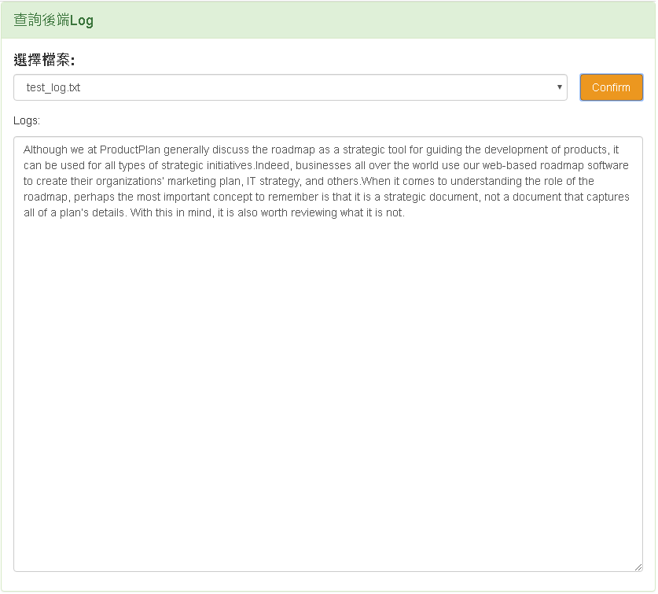
1. Logs produced from backend server are saved as a file. User can browse all log file name by click 選擇檔案 and choose one of it.
2. After that, user has to click Confirm button and the log content will be showed in this block.